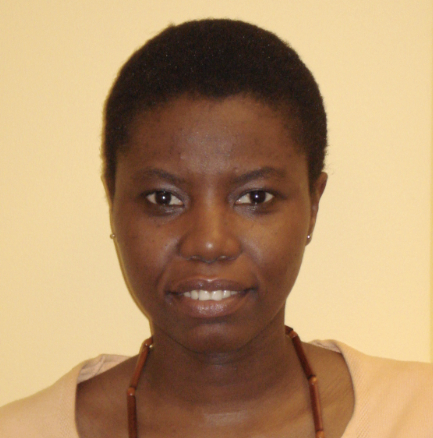

|
Peace
Medie is a first year doctoral student in the Graduate
School of Public and International Affairs at the University
of Pittsburgh and a 2007-2008 International Fellow of the
American Association of University Women. She earned a B.A.
in Resource Development from the University of Ghana and an
M.A. in International Affairs from Ohio University. Her
present fields of study are Foreign and Security Policy and
Development Policy. Her research focuses on the creation of
policies that foster democratic governance practices in
postconflict societies. She also focuses on the development
of policies that promote the inclusion of women in security
and governance and on the study of issue emergence in
transnational advocacy networks. |
 |